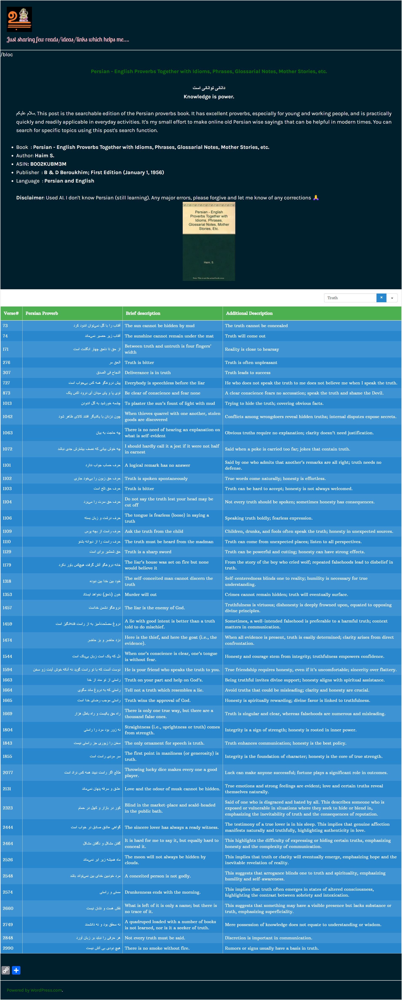

In the Bhagavad Gita, the Lord instructs us to fight for what is right in areas where we are accountable for our actions (aka., prescribed duties). He implies that we must fight against any deviation from truth (only in tasks we hold or willing to hold accountability) for our own benefit. The benefit then are of two types 1. For the person's next life. 2. The merit he passes on to his descendents.
Instead, people seem to pursue what is fleeting, as per the Persian proverb mentioned below.
Kashyapa discusses the potential consequences if irreligion prevails and we, as trained participants, fail to criticize it. He says there may be no need to fight a physical battle, but one should at least speak out against any irreligion in a group for which we are part of. He enlightens us that if we miss our opportunity, it turns into a sin, and subsequent generations in such family have to strive to atone for their ancestors' transgressions. It's like double work for them. His use of "witness" and "only if asked for" implies that "if" it's your prescribed duty, or "only if" you are called for that duty specifically. Probably that's best definition of responsibility. (Click here to Scroll.)
Below are some of classical proverbs about Truth as given in Persian Literature. source: Persian Proverbs
| Verse | Hindi | Kannada | English |
|---|---|---|---|
| प्रह्लाद उवाच त्वं वै धर्मस्य विज्ञाता दैवस्येहासुरस्य च । ब्राह्मणस्य महाभाग धर्मकृच्छ्रमिदं शृणु ॥2-9-68-72॥ |
प्रह्लाद बोले-महाभाग! आप देवताओं, असुरों तथा ब्राह्मणके भी धर्मको जानते हैं। मुझपर एक धर्मसंकट उपस्थित हुआ है, उसे सुनिये ॥2-9-68-72॥ | ಪ್ರಹ್ಲಾದನು ಹೇಳಿದನು: “ನೀನು ದೇವತೆಗಳ ಮತ್ತು ಅಸುರರ ಧರ್ಮವನ್ನು ತಿಳಿದಿದ್ದೀಯೆ. ಮಹಾಪ್ರಾಜ್ಞ! ಈಗ ಓರ್ವ ಬ್ರಾಹ್ಮಣನ ಧರ್ಮಪ್ಪಶ್ನೆಯನ್ನು ಕೇಳು. | Prahlada said, 'O great one! You know the Dharma of the Gods, Demons and Brahmins as well. A Dharma dilemma has arisen before me, please listen to it. ॥2-9-68-72॥ |
| यो वै प्रश्न न विब्रूयाद् वितथं चैव निर्दिशेत् । के वै तस्य परे लोकास्तन्ममाचक्ष्व पृच्छत: ॥2-9-68-73॥ |
मैं पूछता हूँ कि जो प्रश्नका उत्तर ही न दे अथवा असत्य उत्तर दे दे, उसे परलोकमें कौन-से लोक प्राप्त होते हैं? यह मुझे बताइये ॥2-9-68-73॥ | ನನ್ನ ಕೇಳಿಕೆಯಂತೆ ಒಂದು ಪ್ರಶ್ನೆಗೆ ನಿರ್ದಿಷ್ಠ ಉತ್ತರವನ್ನು ನೀಡದಿರುವ ಅಥವಾ ಸುಳ್ಳು ಉತ್ತರವನ್ನು ನೀಡುವವನಿಗೆ ಪರ ಲೋಕದಲ್ಲಿ ಯಾವ ಸ್ಥಾನವು ದೊರೆಯುತ್ತದೆ ಎನ್ನುವುದನ್ನು ಹೇಳು.” | I ask, who does not answer the question or gives a false answer, what worlds does he attain in the next world? Please tell me this. ॥2-9-68-73॥ |
| कश्यप उवाच। जानन्नविब्रुवन् प्रश्नान् कामात् क्रो धादू भयात् तथा । सहस्रं वारुणान् पाशानात्मनि प्रतिमुञ्चति ॥2-9-68-74॥ |
कश्यपजीने कहा--जो जानते हुए भी काम, क्रोध तथा भयसे प्रश्नोंका उत्तर नहीं देता, वह अपने ऊपर वरुणदेवताके सहस्रां पाश डाल लेता है ॥2-9-68-74॥ | ಕಶ್ಯಪನು ಹೇಳಿದನು: “ಪ್ರಶ್ನೆಗೆ ಉತ್ತರವನ್ನು ತಿಳಿದೂ ಕಾಮ, ಕ್ರೋಧ ಅಥವಾ ಭಯದಿಂದ ಉತ್ತರಿಸದೇ ಇರುವವನು ತನ್ನ ಮೇಲೆಯೇ ಸಹಸ್ರ ವರುಣ ಪಾಶಗಳನ್ನು ಬಿಡುಗಡೆಮಾಡಿಕೊಳ್ಳುತ್ತಾನೆ. | Kasyapa said, "He who, despite knowing the truth, does not answer the questions due to lust, anger or fear, invites upon himself the thousand nooses of the god Varuna. ॥2-9-68-74॥ |
| साक्षी वा विज्लुवन् साक्ष्यं गोकर्णशिथिलश्चरन् । सहस्रं वारुणान् पाशानात्मनि प्रतिमुञ्चति ॥2-9-68-75॥ |
जो गवाह गाय-बैलके ढीले-ढाले कानोंकी तरह शिथिल हो दोनों पक्षोंसे सम्बन्ध बनाये रखकर गवाही नहीं देता, वह भी अपनेको वरुणदेवताके सहस्रों पाशोंसे बाँध लेता है ॥2-9-68-75॥ | Verse not in ("ambuda.org , vyasaonline, indology) |
A witness who has ears as loose as the loose ears of a cow or bull and does not testify while maintaining relations with both the parties, also binds himself with thousands of nooses of Varun Devta॥2-9-68-75॥ |
| तस्य संवत्सरे पूर्णे पाश एक: प्रमुच्यते । तस्मात् सत्यं तु वक्तव्यं जानता सत्यमञ्जसा ॥2-9-68-76॥ |
एक वर्ष पूरा होनेपर उसका एक पाश खुलता है, अतः: सच्ची बात जाननेवाले पुरुषको यथार्थरूपसे सत्य ही बोलना चाहिये ॥2-9-68-76॥ | ಅಂಥಹ ಒಂದು ಪಾಶವನ್ನು ಬಿಡಿಸಿಕೊಳ್ಳಲೂ ಅವನಿಗೆ ಒಂದು ವರ್ಷ ಬೇಕಾಗುತ್ತದೆ. ಆದುದರಿಂದ ನಿನಗೆ ಸತ್ಯವು ತಿಳಿದಿದ್ದರೆ ಸತ್ಯವನ್ನು ನೇರವಾಗಿ ಹೇಳಿಬಿಡು. | To free oneself from such a noose, one must wait for a year. Therefore, if you know the truth, speak it directly." ॥2-9-68-76॥ |
| विद्धो धर्मों ह्यधर्मेण सभां यत्रोपपद्यते । न चास्य शल्यं कृन्तन्ति विद्धास्तत्र सभासद: ॥2-9-68-77॥ |
जहाँ धर्म अधर्मसे विद्ध होकर सभामें उपस्थित होता है, उसके काँटेको उससे बिंधे हुए सभासदलोग नहीं काट पाते (अर्थात् उनको पापका फल भोगना ही पड़ता है) ॥2-9-68-77॥ | ಅಧರ್ಮದಿಂದ ಇರಿತಗೊಂಡ ಧರ್ಮನು ಸಭೆಗೆ ಬಂದಾಗ ಸಭಾಸದರು ಆ ಈಟಿಯನ್ನು ಕಿತ್ತೊಗೆಯದಿದ್ದ ರೆ ಅದು ಅಲ್ಲಿರುವವರನ್ನು ಇರಿಯುತ್ತದೆ.॥2-9-68-77॥ | When Dharma (righteousness), stabbed by unrighteousness, enters the assembly (=== to modern time meetings), and if the assembly members fail to remove the spear, but it stabs those present in assembly as well.॥2-9-68-77॥ |
| अर्धं हरति वै श्रेष्ठ: पादो भवति कर्तृषु । पादश्चैव सभासत्सु ये न निन्दन्ति निन्दितम् ॥2-9-68-78॥ |
सभामें जो अधर्म होता है, उसका आधा भाग स्वयं सभापति ले लेता है, एक चौथाई भाग करनेवालोंको मिलता है और एक चतुर्थांश उन सभासदोंको प्राप्त होता है जो निन्दनीय पुरुषकी निन्दा नहीं करते ॥2-9-68-78॥ | ಅವರಲ್ಲಿ ಶ್ರೇಷ್ಠನು ಅರ್ಧವನ್ನು ಪಡೆಯುತ್ತಾನೆ, ಕರ್ತೃವು ಕಾಲುಭಾಗವನ್ನು ಪಡೆಯುತ್ತಾನೆ, ಮತ್ತು ನಿಂದಿಸಬೇಕಾದವರನ್ನು ನಿಂದಿಸದೇ ಇದ್ದ ಸಭಾಸದರು ಕಾಲುಭಾಗವನ್ನು ಪಡೆಯುತ್ತಾರೆ. | Whatever wrongdoing happens in the assembly, half of it is taken by the best among the assembly (or whoever is accountable), one fourth goes to the who committed it and one fourth goes to those members of the assembly (participants of the meet) who do not criticise the criticisable person. ॥2-9-68-78॥ |
| अनेना भवति श्रेष्ठो मुच्यन्ते च सभासद: । एनो गच्छति कर्तारं निन्दार्हो यत्र निन्द्यते ॥2-9-68-79॥ |
जिस सभामें निन्दाके योग्य मनुष्यकी निन्दा की जाती है, वहाँ सभापति निष्पाप हो जाता है, सभासद भी पापसे मुक्त हो जाते हैं और सारा पाप करनेवालेको ही लगता है ॥2-9-68-79॥ | ನಿಂದಾರ್ಹನನ್ನು ನಿಂದಿಸುವುದರಿಂದ ಶ್ರೇಷ್ಠನು ತಪ್ಪಿಲ್ಲದವನಾಗುತ್ತಾನೆ ಮತ್ತು ಸಭಾಸದರು ಮುಕ್ತರಾಗುತ್ತಾರೆ. ಆಗ ಪಾಪವು ಕರ್ತಾರನಿಗೆ ಹೋಗುತ್ತದೆ. ॥2-9-68-79॥ | In a meeting where a person deserving of criticism is criticized, the head of assembly becomes sinless, the members of the meeting also become free from sins and all the sin falls on the person who commits it.॥2-9-68-79॥ |
| वितथं तु वदेयुर्ये धर्म प्रह्लाद पृच्छते । इष्टापूर्तं च ते घ्नन्ति सप्त सप्त परावरान् ॥2-9-68-80॥ |
प्रह्लाद! जो लोग धर्मविषयक प्रश्न पूछनेवालेको झूठा उत्तर देते हैं, वे अपने इष्टापूर्त धर्मका नाश तो करते ही हैं आगे-पीछेकी सात-सात पीढ़ियोंके भी पुण्योंका वे हनन करते हैं ॥2-9-68-80॥ | ಪ್ರಹ್ಲಾದ! ಆದರೆ ಪ್ರಶ್ನೆಯನ್ನು ತಂದವನಿಗೆ ಧರ್ಮದ ವಿರುದ್ಧ ವನ್ನು ಹೇಳುವವನು ಹಿಂದಿನ ಮತ್ತು ಮುಂದಿನ ಏಳು ಪೀಳಿಗೆಗಳವರೆಗೆ ದಾನ-ಆಹುತಿಗಳ ಫಲವನ್ನು ನಾಶಗೊಳಿಸುತ್ತಾನೆ. | Prahlada! However, one who speaks against religion to the questioner will destroy the results of charity (or virtue/merits) and sacrifices for seven generations, both past and future. ॥2-9-68-80॥ |
| हृतस्वस्य हि यद् दु:खं हतपुत्रस्य चैव यत् । ऋणिन: प्रति यच्चैव स्वार्थाद् भ्रष्टस्य चैव यत् ॥2-9-68-81॥ स्त्रिया: पत्या विहीनाया राज्ञा ग्रस्तस्य चैव यत् । अपुत्रायाश्च यद् दुःखं व्याघ्राघ्रातस्य चैव यत् ॥2-9-68-82॥ अध्यूढायाश्च यद् दु:खं साक्षिभिर्विहतस्य च । एतानि वै समान्याहुर्दु:खानि त्रिदिवेश्वरा: । तानि सर्वाणि दु:खानि प्राप्नोति वितथं ब्रुवन् ॥2-9-68-83॥ |
जिसका सर्वस्व छीन लिया गया हो, उसे जो दुःख होता है, जिसका पुत्र मर गया हो, उसे जो शोक होता है, ऋणग्रस्त और स्वार्थसे वंचित मनुष्यको जो क्लेश होता है, पतिसे विहीन होनेपर स्त्रीको तथा राजाके कोपभाजन मनुष्यको जो कष्ट उठाना पड़ता है, पुत्रहीना नारीको जो संताप होता है, शेरके चंगुलमें फँसे हुए प्राणीको जो व्याकुलता होती है, सौतवाली स्त्रीको जो दुःख होता है, साक्षियोंने जिसे धोखा दिया हो, उस मनुष्यको जो महान् क्लेश होता है--इन सभी प्रकारके दुःखोंको देवताओंने समान बतलाया है ॥2-9-68- 81-- 83 ॥ | ಸಂಪತ್ತನ್ನು ಅಪಹರಿಸಿಕೊಂಡವನ ದುಃಖ, ಪುತ್ರನ ಕೊಲೆಯಾದವನ ದುಃಖ, ಸಾಲಗಾರನ ಪ್ರತಿಯಾದ ದುಃಖ, ರಾಜನ ಬಂಧಿಯಾದವನ ದುಃಖ, ಪತಿವಿಹೀನ ಸ್ತ್ರ ಯ ದುಃಖ, ದಂಡಿನಿಂದ ತೊರೆಯಲ್ಪಟ್ಟವನ ದುಃಖ, ಇಬ್ಬರು ಹೆಂಡತಿಯರಿರುವವನ ಪತ್ನಿಯ ದುಃಖ, ಮತ್ತು ಸಾಕ್ಷಿಗಳ ಎದುರು ಹೊಡೆತತಿಂದವನ ದುಃಖ ಇವೆಲ್ಲವೂ ದುಃಖಗಳೂ ಒಂದೇ ಎಂದು ತ್ರಿದಶೇಶ್ವರರು ಹೇಳುತ್ತಾರೆ. ಈ ಎಲ್ಲ ದುಃಖಗಳಿಗೂ ತಪ್ಪು ಉತ್ತರವನ್ನು ನೀಡಿದವನು ಇದೇ ದುಃಖವನ್ನು ಅನುಭವಿಸಿತ್ತಾನೆ. | The sorrow of someone who has lost their wealth, the sorrow of someone who has lost their son, the sorrow of a debtor who is unable to repay, the sorrow of someone imprisoned by a king, the sorrow of a widow, the sorrow of someone who has been beaten and expelled, the sorrow of a man with two wives, and the sorrow of someone who has been humiliated in front of witnesses - all these sorrows are said to be the same, according to the Tridasheshwaras. The one who has lied during all these sorrowful situation will experience this very sorrow.॥2-9-68- 81-- 83 ॥ |
| समक्षदर्शनात् साक्षी श्रवणाच्चेति धारणात् ॥2-9-68-84॥ तस्मात् सत्यं ब्रुवन् साक्षी धर्मार्थाभ्यां न हीयते । |
झूठ बोलनेवाला मनुष्य उन सभी दुःखोंका भागी होता है। समक्ष दर्शन, श्रवण और धारणसे साक्षी संज्ञा होती है, अत: सत्य बोलनेवाला साक्षी कभी धर्म और अर्थसे वंचित नहीं होता ॥2-9-68-84॥ | ತನ್ನ ಸಮಕ್ಷಮದಲ್ಲಿ ಯಾರು ನೋಡುತ್ತಾನೋ ಅಥವಾ ಕೇಳುತ್ತಾನೋ ಅವನನ್ನು ಸಾಕ್ಷಿ ಎಂದು ಕರೆಯುವುದರಿಂದ ಅವನು ಸತ್ಯವನ್ನು ನುಡಿದನಾದರೆ ಅವನ ಧರ್ಮ ಮತ್ತು ಅರ್ಧಗಳು ನಾಶವಾಗುವುದಿಲ್ಲ.”” | "Whoever sees or hears in his presence is therefore called as a "witness", so if he speaks sincerely, his religion and his wealth will not be destroyed.". ॥2-9-68-84॥ |